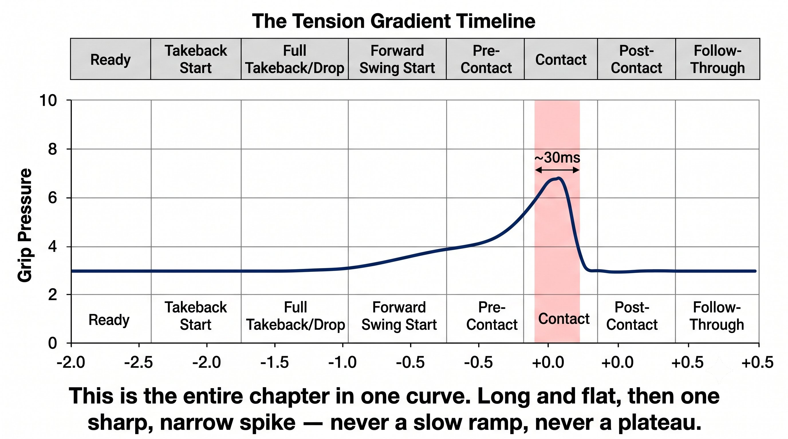
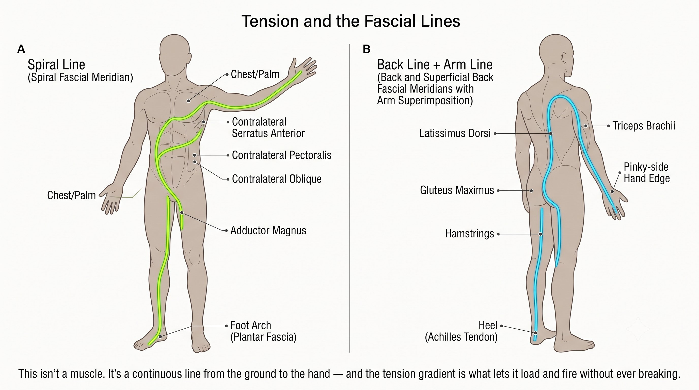

Chapter 6: The Transmission
(English version of Chapter 6 in the United Tennis Handbook)
CHAPTER 6

Figure 1
THE TRANSMISSION
Arm Tension Gradient (Loose → Firm → Loose)
The energy you stored in the takeback still has to reach the ball. Tension is what transmits it.
A tight arm feels powerful but hits weak. A loose arm feels weak but hits heavy. The difference is timing.
— Henry Pham
The Tension Paradox
Most players get this exactly backwards:
– They tense up early — during the takeback and the drop — which kills the stretch-shortening cycle and blocks fascial recoil.
– They stay loose too late — at or after contact — so the face wobbles and energy leaks out.
– The pros do the opposite: loose early, firm at contact, loose again immediately after.
The Principle
Tension isn't binary. It's a gradient, and it has to peak at the exact millisecond of contact.
The Tension Gradient Timeline
Here's what that gradient looks like across a forehand topspin drive (a two-handed backhand drive follows a similar pattern):
Figure 6.1: The tension curve is the whole chapter in one line. Loose at 3/10 for almost the entire swing, a razor-sharp peak to 6–7/10 for 30 milliseconds at contact, then back to loose. No flat top, no hesitation — just a needle spike.

Figure 2
The Principle
The tension peak lasts about 30 milliseconds. Before and after, you're sitting at 3 out of 10. At contact, you're at 6 to 7 out of 10. That's the entire transmission system.
Why Tight Early Kills Power
When you grip tight during the takeback, a chain of consequences follows:
– Muscle spindles detect the rapid stretch and trigger a protective co-contraction, locking up the forearm and bicep.
– The fascial lines can't stretch, so no elastic energy gets stored, and there's no stretch-shortening-cycle recoil to draw on.
– The wrist can't lay back passively, so there's no whip loaded — you end up muscling the forward swing instead.
– The chest and core can't transfer energy through a rigid arm, so energy leaks out at the shoulder and elbow.
– The result: it feels like effort, the ball has no weight behind it, and elbow or shoulder pain tends to follow.
Figure 6.2: Tight early locks the wrist, shortens the fascial lines, and blocks the stretch-shortening cycle. The arm becomes a rigid stick — no whip, no free energy, just muscled effort.

Figure 3
Coach's Note
Try this: shadow-swing with an 8-out-of-10 grip from the start. Feel your shoulder and elbow lock up. Now try it at 3 out of 10, and let the wrist flop back freely. Feel the stretch through your chest and forearm. That stretch is the energy.
Why Loose Late Kills Control
When you stay loose at contact, a different chain of consequences follows:
– The face angle wobbles, so launch direction varies and depth and direction both become inconsistent.
– Energy can’t transfer from body to ball, so contact feels "soft" and lacks penetration.
– Vibration travels up the arm, shocking the elbow and wrist and raising injury risk.
– The ball sticks to the strings too long, producing unpredictable spin.
– The result: it feels relaxed, but the ball floats, and your opponent attacks it.
Figure 6.3: Loose at contact lets the face wobble, the energy leak, and the vibration travel up the arm. The ball sticks to the strings too long — unpredictable spin, no penetration.

Figure 4
The Principle
3 out of 10, up to 6 out of 10 at contact, back down to 3 out of 10. That transition has to be automatic, not something you think through.
Tension Profiles by Shot Type
Not every shot uses the same gradient.
Figure 6.4: Every shot type has its own tension fingerprint. Power shots spike; touch shots hold. Knowing which profile belongs to which shot is the difference between hitting it and guiding it.

Figure 5
The Principle
Touch shots — slice, volley, drop shot — use constant firmness with no sharp peak. Power shots use a gradient with a sharp peak.
How to Train the Gradient
You can't think "3 to 6 to 3" in the middle of a swing. It has to be wired in before you ever need it consciously:
1. Squeeze-Release Drill: grip at 8/10, drop to 3/10, back to 8/10, down to 3/10. 20 reps. Trains voluntary control over your grip.
2. Towel Snap: hold one end of a towel and snap it. You can't get a snap with a tight hand — only loose-then-firm-then-loose works. Feel the wave travel through it.
3. Ball Toss and Catch: toss a ball up and catch it on the racket face. You have to be loose to absorb it and firm to hold it. 20 reps.
4. Shadow Gradient: slow-motion shadow swing. Say "loose... loose... firm... loose" out loud at each phase. 50 reps until it's automatic.
5. Wall Drill — Feel the Peak: hit against a wall, focusing only on feeling that 30-millisecond firm moment. Ignore the swing itself; just find the peak.
6. Two-Ball Drill: have a coach or partner feed two balls fast, back to back. The first ball, your gradient runs on autopilot. The second ball, there's no time to think at all — which tests whether it's actually wired in.
Coach's Note
If your forearm burns after practice, you're getting tight too early. If your elbow hurts, you're staying loose at contact. Healthy looks like firm only for that one instant of contact.
Tension and the Fascial Lines
The tension gradient isn't just muscular — it's fascial continuity running through connected lines in the body:
– Spiral Line (forehand push): foot arch, through the adductor, the oblique, the chest, and out through the palm. Tension has to flow through the whole line — a tight shoulder breaks it.
– Back Line plus Arm Line (one-handed "saber" backhand): heel, through the hamstring, the glute, the lat, the tricep, and out through the pinky-side edge of the hand. Tension has to flow here too — a tight wrist breaks the line.
– The gradient is what allows the line to stretch while loose and then snap while firm, without ever breaking continuity.
– Constant tightness means the line is already shortened — no stretch, no recoil.
Figure 6.5: The tension gradient isn't just in the arm — it runs through the entire fascial line from foot to racket. Spiral Line for the forehand, Back Line + Arm Line for the backhand. Break the gradient anywhere, and you break the line.
The Rule
The tension gradient is the fascial line loading and unloading. Break the gradient, and you break the line.
The Tension Checklist
3/10 through the takeback, 6/10 at contact for 30 milliseconds, immediately back to 3/10. Loose early, peak at impact, loose after.
LOOSE LOADS. FIRM TRANSMITS. LOOSE RELEASES.
Key Takeaways
– Takeback: 3/10, wrist passive, feel the stretch through your chest and lat.
– Forward swing: still 3/10 until about 5cm before contact.
– Contact: snap to 6–7/10 for exactly 30 milliseconds — palm pushes, or edge slices.
– Post-contact: instant drop back to 3/10 — let the racket wrap through freely.
– Forearm burning means you're tight too early; elbow pain means you're loose at contact.
– Slice and volley use a constant 4–5/10 with no peak; power shots use a gradient with a sharp peak.
– Train it with the towel snap, squeeze-release, shadow gradient, and the wall peak-focus drill.
Where This Leads
This chapter establishes the energy-transmission variable — the E in Q-V-ROOT-8-45-Impulse. Chapter 7 integrates court plus ball into required face, then grip plus contact plus takeback plus tension, into the full CORE decision loop.